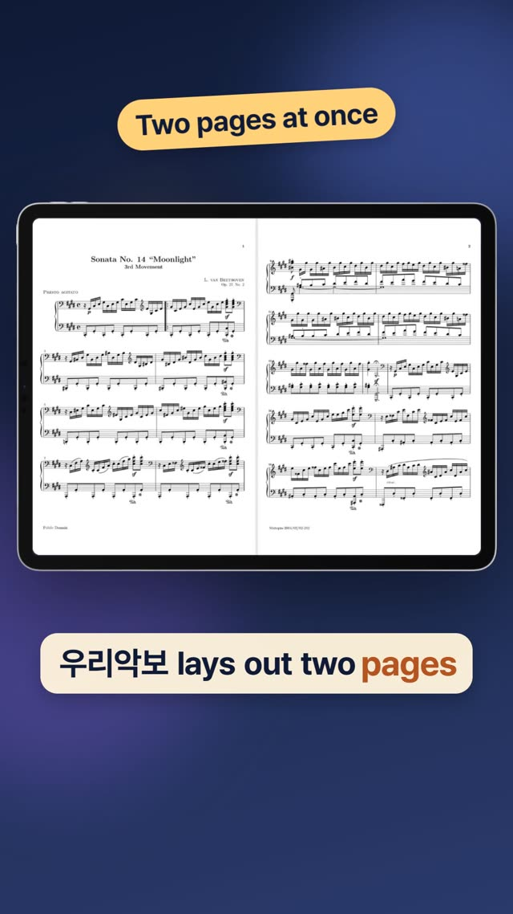
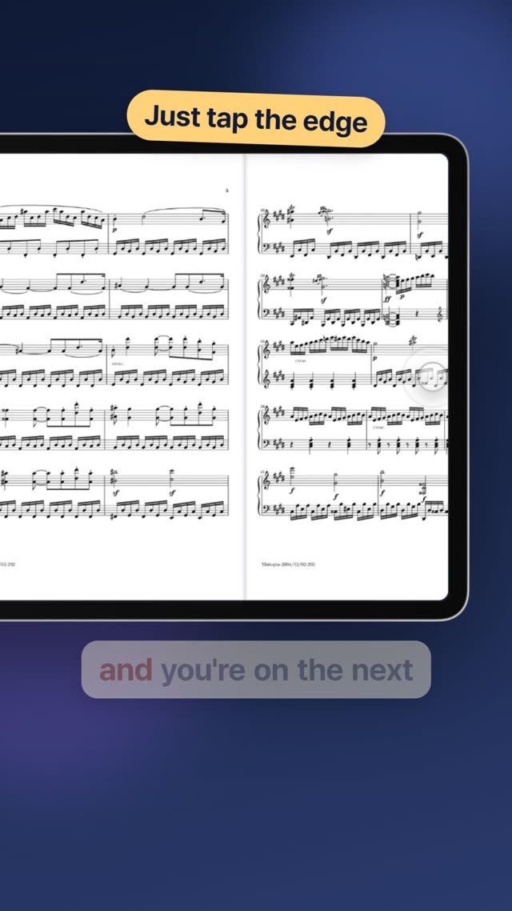

See two pages of sheet music at once on iPad
Turning a page and not seeing the next line is nerve-racking. With two pages open like a paper score, you can read ahead before you turn.
Get 우리악보 (Uri Akbo) on the App Store
How it works
1. Open the two-page view
Hold your iPad in landscape and two pages of the score appear side by side.

2. Tap the edge to turn
Tap the right edge of the screen once to move to the next two pages. The left edge goes back.

3. Or swipe
A sideways swipe turns the page too. Use whichever is easier while you play.
Get 우리악보 (Uri Akbo) on the App Store
Screens were recorded from the real app running in a simulator. The finger markers show where the screen was touched.